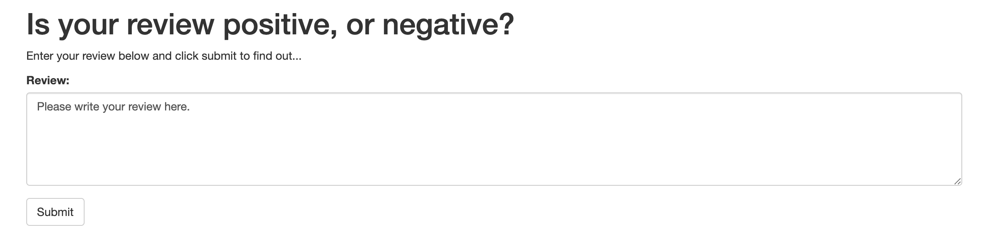

Movie Sentiment Prediction Deployment on AWS SageMaker
2021-06-02
2-minute read
Technologies:
- Python (
torch) for LSTM - I trained the models with
AWS SageMaker.
Introduction
The goal of the project is to have a simple web page which a user can use to enter a movie review. The web page will then send the review off to our deployed model on AWS SageMaker which will predict the sentiment of the entered review.
General Process
- Download or otherwise retrieve the data.
- Process / Prepare the data.
- Upload the processed data to S3.
- Train a chosen model.
- Test the trained model (typically using a batch transform job).
- Deploy the trained model.
- Use the deployed model.
The Data
I used the IMDb dataset.
The model
I will use a simple LSTM model:
class LSTMClassifier(nn.Module):
def __init__(self, embedding_dim, hidden_dim, vocab_size):
"""
Initialize the model by settingg up the various layers.
"""
super(LSTMClassifier, self).__init__()
self.embedding = nn.Embedding(vocab_size, embedding_dim, padding_idx=0)
self.lstm = nn.LSTM(embedding_dim, hidden_dim)
self.dense = nn.Linear(in_features=hidden_dim, out_features=1)
self.sig = nn.Sigmoid()
self.word_dict = None
def forward(self, x):
"""
Perform a forward pass of our model on some input.
"""
x = x.t()
lengths = x[0,:]
reviews = x[1:,:]
embeds = self.embedding(reviews)
lstm_out, _ = self.lstm(embeds)
out = self.dense(lstm_out)
out = out[lengths - 1, range(len(lengths))]
return self.sig(out.squeeze())Deploy the model in SageMaker:
from sagemaker.pytorch import PyTorch
estimator = PyTorch(entry_point="train.py",
source_dir="train",
role=role,
framework_version='0.4.0',
train_instance_count=1,
train_instance_type='ml.p2.xlarge', #'ml.p2.xlarge',
hyperparameters={
'epochs': 10,
'hidden_dim': 200,
})
estimator.fit({'training': input_data})
predictor = estimator.deploy(initial_instance_count=1, instance_type='ml.p2.xlarge')and then use the predictor to predict on processed text reviews:
test_review = 'This movie is fantastic!'
test_review_processed = review_to_words(test_review)
processed_test_review, lengh_test_review = convert_and_pad(word_dict, test_review_processed)
test_data = np.expand_dims(
np.hstack((lengh_test_review, processed_test_review)),
axis=0)
predictor.predict(test_data)Deploy the model using Lambda function and API Gateway

- On the far right, we have the model in Python.
- On the far left is the web app that reads a movie review, sends it off via a URL and returns a positive or negative sentiment prediction.
- In the middle, we have a Lambda function, which is a Python function that can be executed whenever an event occurs. I will give this function permission to send and receive data from a SageMaker endpoint.
- Lastly, the method I will use to execute the Lambda function is an endpoint that we will create using API Gateway. This endpoint will be a URL that listens for data.
Simple Interface
